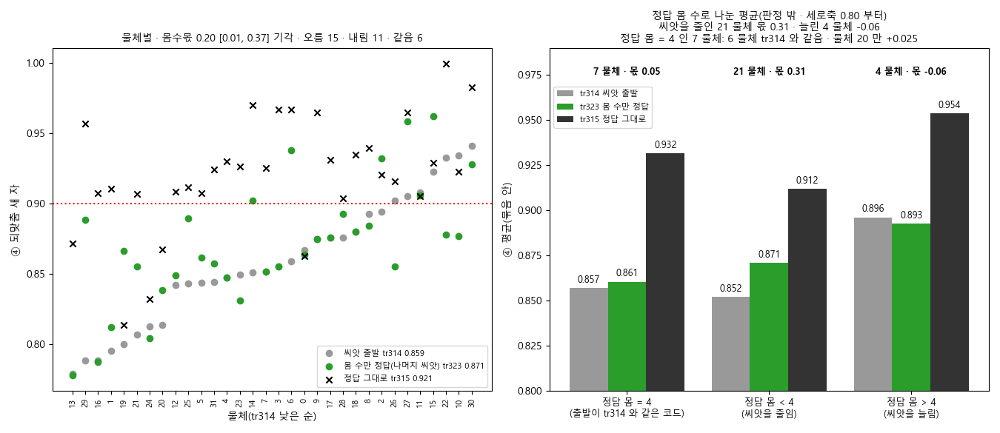

실험 m2_tr0323_h076_몸수만
목표 G1.2 view 모음 → 파츠별 CAD code(CadQuery · 그 전 「3 면도 → 파츠별 CAD」 · 지금 M2 는 위 · 앞 · 옆 고정 세 장만 받음 → 아무 각도 N 장으로 바꿀 것 · 11-20) · G1 첫 제품 — 피규어 · 메카 사진 여러 장 + 치수 → 숨은선 3 면도 + 파츠별 CAD · G0 임의의 이미지 → CAD 코드 · 빌린 가정 5: 정사영 · 시점앎 · 흰바탕 · 렌더화풍 · 정답3D · 갚는 계획: 진단 · 정답 만들기 — 껍데기를 그릴 어휘가 정해지면 그 어휘로 CAD code 정답 변환(m2 학습 · 비교는 그 뒤 카드) · 목표 시험지 값: 안 잼 (!)
tr315 의 ④ 오름은 주로 뺌 몸 수 덕인가 — 지금 씨앗 규칙에서 덩이 수만 정답 뺌 수로 주면 오름의 몇 할을 되찾나?
| 가설 | 주장 | 결과 | 근거 |
|---|---|---|---|
| m2-H76 | tr315 오름은 주로 뺌 몸 수 덕이다 — 몸 수만 정답으로 주면 tr315 오름의 70 % 이상을 되찾는다 | 기각 | S6 합성 정답 32 · 씨앗 덩이 수만 정답 뺌 몸 수로 ④ 되맞춤 새 자 평균 0.8714(tr314 0.8588 · tr315 0.9214) · 몸수몫 0.2012(≤ 0.3 → 기각) · 구간 [0.0123, 0.3722] · 넷차 +0.0126 구간 [0.0008, 0.024] · 오름 15 · 내림 11 · 같음 6 · 물체별 차 중앙값 0 · 0.9 넘은 물체 7/32(새로 넘음 2 · 6 · 14 · 떨어짐 10 · 22 · 26) · 가장 큰 오름 29 +0.1006 · 6 +0.0789 · 19 +0.0659 · 내림 10 −0.0575 · 22 −0.0546 · 26 −0.0468 · 최소 0.7777 · 뺌 찾음 34/93(tr314 28 · tr315 74) · 남은 뺌 몸 평균 1.94(tr314 2.41 · tr315 2.5 · 정답 2.91) · 하네스 실패 0 · CAD 안 끝남 0 · 조용한 실패 0 · 판 폴더 0.07 GB · 끝 단계 22.8 분(15:19:04 → 15:41:52 · 겹침 없음 · tr314 23 분) · 판정 밖(결과 뒤): 정답 몸 수 4 인 7 물체(3 · 4 · 7 · 9 · 17 · 18 · 20) 몫 0.047(0.8571 → 0.8606 · tr315 0.9316) · 6 물체 차 0 · 20 +0.0246 · 넷보다 적은 21 물체 몫 0.313(0.8522 → 0.8709 · tr315 0.9119) · 넷보다 많은 4 물체(8 · 11 · 14 · 22) 몫 −0.059(0.8962 → 0.8928 · tr315 0.9537) · 끝 뺌 몸 수 = 정답 수 9/32(tr314 7/32) · 검토 셈: 칸이 tr314 와 다른 곳은 묶음 16 ~ 23 · 씨 101 뿐(tr322 도 같음 · 원인 미확인) · 물체 20 tr314 씨 101 무효 → 이 판 0.835 |
결정 표(돌리기 전에 정함)
- 만약 지지
다음 몸 수가 주된 원인 — 입력에서 뺌 수를 고르는 씨앗 고침 카드 - 만약 기각
다음 몸 수 혼자는 아님 - 만약 약함
다음 섞임 — 숫자 그대로 적고 사용자와 고름
분석
한 줄로
물음: tr315 에서 뺌 몸을 정답 그대로 출발시키자 관문 ④ 가 0.8588 → 0.9214 로 올랐다. 그 오름은 주로 몸 수 덕인가? 지금 씨앗 규칙에서 몸 수(덩이 수)만 정답 수로 맞추면 오름의 몇 할을 되찾나?
답: 20 % 만 되찾았다(몸수몫 0.20 · 구간 [0.01, 0.37]). 평균은 0.8714 다. 몫이 기각 선(0.3) 아래라 판정은 기각이다. 결과 전에 적은 예측도 기각이었다. 구간 위끝(0.37)은 기각 선을 넘는다.
왜 이 실험을 했나
우리 목표는 메시를 부품 CAD 코드로 바꾸는 것이다. 이 판들은 그 정답을 만드는 변환이 얼마나 충실한지 본다. tr316 ~ 318 · tr322 에서 자리 · 종류 · 크기 · 축을 하나씩 정답으로 줬지만 모두 혼자서는 오르지 않았다. 이 판은 사용자가 고른 A 네 판 가운데 마지막(A4)으로, 몸 수 하나만 정답으로 줬다.
낱말 몇 개를 먼저 풀어 둔다.
- ④ 는 본 판 전에 거치는 관문이다. 뺌 어휘로 직접 만든 합성 정답 32 개(물체 0 ~ 31)를 같은 맞춤으로 다시 맞춰(되맞춤) 정답을 되찾는지 본다.
- 씨앗 은 입력에서 파인 점을 k-평균으로 덩이로 나눠 뺌 몸을 처음 놓는 자리다. 지금 씨앗은 늘 네 덩이다.
- 끝 단계 는 고른 출발을 다듬는 단계다. 입력 점수가 오르면 몸을 끄거나 뒤집고(R7), 점수를 거의 안 바꾸는 몸은 지운다(가지치기).
바꾼 것 하나
같은 파인 점 · 같은 k-평균(씨 0)을 네 덩이 대신 정답 뺌 몸 수만큼 나눴다(1 ~ 8). 자리 · 크기 · 축 · 종류는 지금 씨앗 규칙 그대로다. 나머지는 tr314 와 같다.
결과

왼쪽 그림의 가로축은 tr314 점수가 낮은 물체부터 늘어놓은 순서다. 초록(이 판)은 회색(tr314) 둘레에 붙어 있고 여럿은 겹친다. 오른쪽은 물체를 정답 몸 수가 넷과 같은지 · 적은지 · 많은지로 나눈 평균이다(판정 밖).
| 몸수만(이 실험) | 씨앗 출발(tr314) | 정답 그대로(tr315) | |
|---|---|---|---|
| 되맞춤 새 자 평균 | 0.8714 | 0.8588 | 0.9214 |
| 되찾은 몫 | 0.20 [0.01, 0.37] | 0 | 1 |
| 0.9 넘은 물체 | 7/32 | 7/32 | 27/32 |
| 뺌 자리 찾음 | 34/93 | 28/93 | 74/93 |
| 끝에 남은 뺌 몸(물체 평균) | 1.94 | 2.41 | 2.5 |
| 하네스 실패 · CAD 안 끝남 | 0 · 0 | 0 · 0 | 0 · 0 |
새 자는 정답 메시와 맞춘 메시의 표면 점이 서로 0.02 안에 드는 정도를 F 점수(0 ~ 1)로 잰 값이다. 거리 단위는 정답을 둘러싼 상자의 가장 긴 변을 1 로 둔 것이다. 되찾은 몫은 (이 판 − tr314) ÷ (tr315 − tr314) 다. 대괄호는 물체를 짝지어 다시 뽑은(부트스트랩 2,000 번) 95 % 구간이다.
왜 이렇게 나왔나
확인한 것
- 짝 차는 +0.0126, 구간은 [0.0008, 0.0240] 이다. 오름 15 · 내림 11 · 같음 6, 물체별 차 중앙값 0 이다. 0.9 를 새로 넘은 물체는 2 · 6 · 14, 떨어진 물체는 10 · 22 · 26 이다. 가장 큰 오름은 29(+0.10), 가장 큰 내림은 10(−0.06)이다.
- 아래 묶음 셋은 판정 밖이고 결과 뒤에 셌다. 정답 몸 수가 넷보다 적은 21 물체(씨앗을 줄임): 몫 0.31(0.8522 → 0.8709 · tr315 0.9119) — 이 묶음만 보면 기각 선 0.3 을 조금 넘는다.
- 넷보다 많은 4 물체(8 · 11 · 14 · 22 · 씨앗을 늘림): 몫 −0.06(0.8962 → 0.8928 · tr315 0.9537).
- 정답 몸 수가 넷인 7 물체(3 · 4 · 7 · 9 · 17 · 18 · 20): 몫 0.05. 6 물체는 점수가 tr314 와 똑같고, 물체 20 하나만 +0.025 다. 코드상 출발 씨앗이 tr314 와 같다(같은 파인 점 · 같은 k-평균 넷 · 씨 0 · tr314 기록의 씨앗 수가 32 물체 모두 4 라 200 문턱 차이도 안 걸림).
- 칸 파일로 견주면 3 · 4 · 7 · 9 는 출발 16 개 모두 tr314 와 비트까지 같다. 17 · 18 · 20 은 씨 101 하나만 다르다(묶음 16 ~ 23 · 씨 101). tr322 에서도 출발이 같은 19 가 같은 묶음 · 씨에서만 칸이 달랐다. 물체 20 은 tr314 에서 씨 101 출발이 무효(0 점)였고 이 판에서는 0.835 가 되어 고른 출발이 102 에서 101 로 바뀌었다.
- 끝에 남은 뺌 몸 수가 정답 수와 같은 물체는 9/32(tr314 7/32)다. 남은 뺌 몸 평균은 1.94 로 tr314 2.41 보다 줄었다(정답 평균 2.91). 출발 몸 수만 맞췄고 끝 몸 수는 지켜지지 않았다.
짐작 (아직 확인 안 함)
- 묶음 16 ~ 23 · 씨 101 에서만 tr314 와 칸이 다른 까닭은 모른다(tr322 · tr323 둘 다). 그 한 칸의 GPU 비결정성일 수도, tr314 쪽 실행의 이상일 수도 있다. 출발 하나가 무효와 유효 사이를 오가면 물체 점수가 0.025 쯤 바뀐다(물체 20).
- 몸 수를 맞춰도 자리 · 크기 · 축이 씨앗 규칙이면 정답 몸 노릇을 못 해 크게 안 오르는 것으로 보인다(씨앗을 줄인 21 물체는 0.31 로 조금 오름). tr321(종만 씨앗 · 나머지 정답)이 다 되찾은 것과 맞물린다. 다만 두 판은 바꾼 것이 달라 같은 기준의 비교가 아니다.
한계
- 정답에서 몸 수를 빌린 진단이다. 실제 물체에 그대로 쓸 수 없다.
- 판정 구간 위끝(0.37)이 기각 선 0.3 을 넘는다. 기각은 점 몫 기준이다.
- 몸 수를 바꾸면 k-평균 덩이가 달라져 자리 · 크기도 함께 바뀐다(몸 수와 씨앗 꼴이 엮임).
- 정답 수가 넷보다 많은 4 물체는 뺌 칸이 늘어 더함 몸 칸이 줄어든다(정답 8 이면 더함 4 · 카드 섞임 칸). 이 묶음 몫 −0.06 은 4 물체뿐이고 물체 22 하나(−0.055)에 크게 기댄다.
- 실행 사이 흔들림을 재지 않았다. 짝 차 구간은 tr314 를 고정값으로 본 것이다.
- 묶음별 몫은 판정 밖이고 결과 뒤에 셌다. 묶음 크기가 7 · 21 · 4 라 구간은 재지 않았다. 묶음은 정답 몸 수로 갈려 물체 꼴과 섞여 있다.
- 오른쪽 그림의 세로축은 0.80 부터라 막대 차가 커 보인다.
- 한 번만 돌렸다. tr314 를 지금 코드로 다시 돌리지 않았다.
- 끝 단계는 22.8 분 걸렸다(15:19:04 → 15:41:52 · tr314 23 분). 다른 판 GPU 단계와 겹치지 않았고 CAD 안 끝남은 0 이다.
배운 것과 다음
몸 수만 정답으로 주면 오름의 20 % 만 되찾는다. A 네 판 가운데 오름을 다 되찾은 것은 종만 씨앗으로 둔 tr321 하나다.
- A 넷: A1 tr320 몸 수만 씨앗 0.64(보류 · 섞임) · A2 tr321 종만 씨앗 1.00(지지) · A3 tr322 축만 정답 0.12(기각) · A4 tr323 몸 수만 정답 0.20(기각).
- 하나씩은 모두 기각이고 넷이 함께 정답이면 다 되찾는다(법칙 L33). 둘 · 셋씩 묶은 조합은 재지 않아 「함께라야만」 인지는 아직 모른다.
- 다음은 사용자와 고른다. 사용자 결정(11-27)대로 실제 데이터 판 tr324 가 돌고 있다.
검토 (11-27 맥락 없는 서브 에이전트 · 보고 · 카드 · 잼 · 넷 넷(314 · 315 · 322 · 323) · 결과_pc.png · 그림323.py · 껍데기313 · 배관2 · 상태 · 끝칸 · 칸 · 기록 json 만 봄)
- 숫자 · 묶음 번호(참뺌으로 센 정답 몸 수)는 모두 맞음.
- 가장 큼: 짐작 「묶음 구성이 바뀌어 계산 순서가 달라진 탓」 은 있는 칸 파일로 잴 수 있었고 자료와 어긋남 — 묶음 0 ~ 7 은 동료 몸 수가 바뀌어도 비트까지 같음 · 차이는 묶음 16 ~ 23 · 씨 101 에만(tr322 도 같음) · 원인 미확인.
- 「7 물체 최대 0.025」 는 6 물체 0 · 20 하나 +0.025 · tr322 대비 문장도 틀림 · 「출발 같음」 에 씨앗 수 4 근거 빠짐.
- 묶음 몫 「판정 밖」 표시 없음 · 0.31 이 기각 선 넘음을 안 다룸 · 「함께 맞아야」 는 조합을 안 재 필요조건 주장이 안 됨.
- 그림: 오른쪽 제목 셋째 줄 · 왼쪽 묶음 표시 없음 · 눈금 글씨.
- 빠진 한계: 끝 몸 수 안 지켜짐(9/32 대 7/32 · 1.94) · 넷보다 많은 묶음 더함 칸 줆 · 실행 흔들림 · 4 물체 묶음.
고친 줄 (검토 반영)
- 제 실수: 재지 않은 「묶음 구성 탓」 짐작을 썼다. 내가 다시 셈(6 물체 차 0 · 20 +0.0246 · 끝 뺌 = 정답 수 9/32 대 7/32 · 평균 1.94 · 정답 2.91) → 확인한 것 · 짐작 · 한계 · 그림 제목 고침 · 고친 그림을 다시 보냄.
- 칸 비교(묶음 16 ~ 23 · 씨 101)는 검토가 센 값이라 원인 미확인으로만 적음.
- 묶음 몫 판정 밖 표시 · 0.31 · 배운 것 2 를 「하나씩은 기각 · 넷 함께는 지지 · 조합 안 잼」 으로.